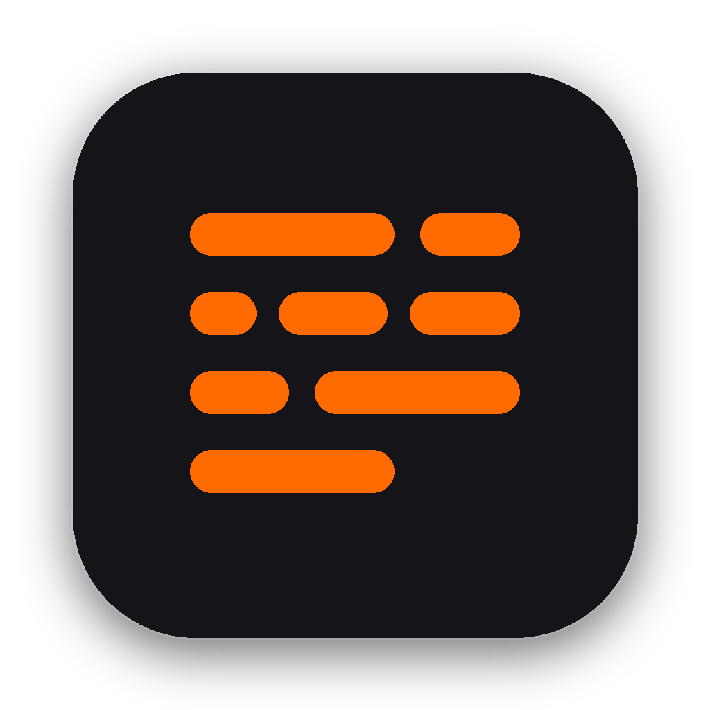

NotchFlowNotchFlow anchors natively underneath your MacBook camera notch, tracking your voice in real time so you maintain perfect eye contact with your camera. 100% on-device speech processing, zero cloud latency.
NotchFlow is a native macOS teleprompter designed specifically for Apple Silicon MacBooks. It locks seamlessly under the display notch and tracks your voice in real time so you never break eye contact.
Engineered in 100% pure SwiftUI and Apple SpeechKit. Zero Electron bloat, negligible CPU footprint, and instant sub-millisecond audio response.
Sub-millisecond audio phoneme evaluation running entirely on Apple Neural Engine.
Smooth live edge drag resizing adapting to any script formatting or display size.
Built for macOS 14 Sonoma and macOS 15 Sequoia with native windowing & transparency.
100% free and open source. Fully inspectable, auditable, and hackable on GitHub.
Your voice and presentation scripts never leave your machine. NotchFlow operates entirely offline using on-device Apple SpeechKit models. There are no accounts, no cloud endpoints, and no behavioral tracking.
Everything you need to know about installing and using NotchFlow.
SFSpeechRecognizer framework configured with on-device processing enabled. It matches real-time speech phonemes against your loaded text buffer directly using the Apple Neural Engine.
NotchFlow-Installer.dmg, double-click to mount the disk image, and drag NotchFlow.app into your macOS Applications folder. On first run, grant microphone permissions so the app can sync with your voice.
Download the standalone macOS installer DMG today and deliver flawless presentations with continuous eye contact.
Join the community for updates, feature announcements, and macOS compatibility notes.